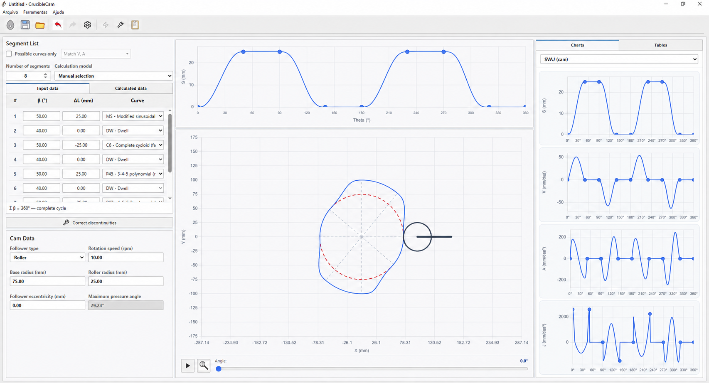
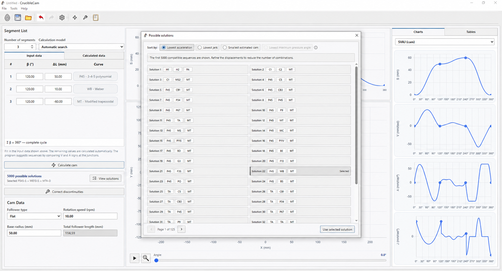
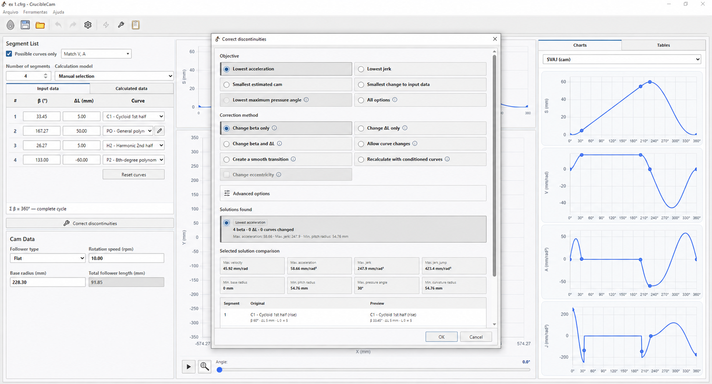
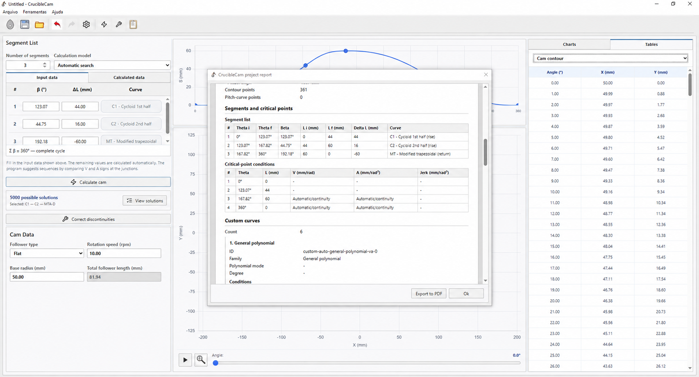

In this article
CrucibleCam 1.5.0 is now available as a desktop program for Windows x64. The web version remains a quick way to explore the interface and try the basic features; the Windows version takes the work further by bringing cycle definition, motion-law selection, profile calculation and engineering checks into a single tool.

From the web version to the Windows program
The CrucibleCam web version remains an online preview for experimenting with the simulator's basic behaviour directly in a browser. The desktop program provides the broader workflow. Instead of studying one curve or one design step in isolation, users can build a complete 360° cycle, inspect its kinematic quantities, calculate cam geometry and review the results before applying a correction.
This is useful in mechanism and machine-design courses, preliminary engineering design and studies that require comparing many motion laws. The goal is not to replace engineering judgement, but to make iterations that would otherwise require several spreadsheets, plots and recalculations fast and traceable.
What CrucibleCam can do
The desktop environment organises the main stages of designing a cam-and-follower mechanism:
- Build complete motion cycles: combines rise, return and dwell segments into a full 360° cam rotation.
- Select motion laws: supports manual curve selection and automatic searches for compatible sequences.
- Calculate the cam profile: determines geometry for flat-faced and roller followers from the motion and cam inputs.
- Analyse SVAJ diagrams: presents displacement, velocity, acceleration and jerk throughout the cycle.
- Run engineering checks: examines follower motion, pressure angle and profile curvature.
- Diagnose discontinuities: identifies displacement, velocity and acceleration jumps at segment junctions.
- Correct discontinuities: searches for a continuous solution by adjusting angle β, displacement change ΔL and, when allowed, the motion law itself.
- Compare solutions: places the original design beside a corrected preview so the change can be checked before it is applied.

Design, analysis and correction in one environment
One of CrucibleCam's strengths is keeping motion definition and geometry side by side. When a segment changes, the designer can immediately see the effect on displacement, the SVAJ derivatives, cam contour and quantities such as maximum pressure angle. This combined reading helps prevent choosing a law based only on the appearance of its displacement curve.
When junctions are incompatible, the correction window allows the user to choose an objective and method, inspect the solutions found and compare design indicators. A change is applied only after the preview has been reviewed.

The program also brings together result tables and a project report. Segments, critical points, continuity conditions, custom curves and geometric data can be reviewed before the study is exported or documented.

What the PRO version unlocks
CrucibleCam is available in Free and PRO editions. Free covers essential use, while PRO adds advanced selection, correction, optimisation and export capabilities. According to the program's official feature list, PRO unlocks:
- velocity, acceleration and jerk curve-compatibility criteria;
- solution resolution below 1°;
- simultaneous β and ΔL correction;
- discontinuity correction by replacing curves;
- transition-based discontinuity correction;
- discontinuity correction with conditioned curves;
- pressure-angle optimisation;
- eccentricity adjustment during correction;
- DXF profile export;
- XLSX data export.
Explore, download and start a project
The official page provides the Windows x64 installer, user guide, licensing information, version history and web preview. Visit the CrucibleCam website, download the program and begin with a simple rise–dwell–return cycle. Then compare motion laws, inspect the SVAJ charts and use the correction tools to turn a motion specification into a verifiable cam profile.
For the technical background, continue with the articles on comparing displacement curves and the mathematics of SVAJ discontinuity correction.
Questions about the program or a result? Send this page address and your project inputs to arturavelar@ufsj.edu.br. · About the author · Privacy